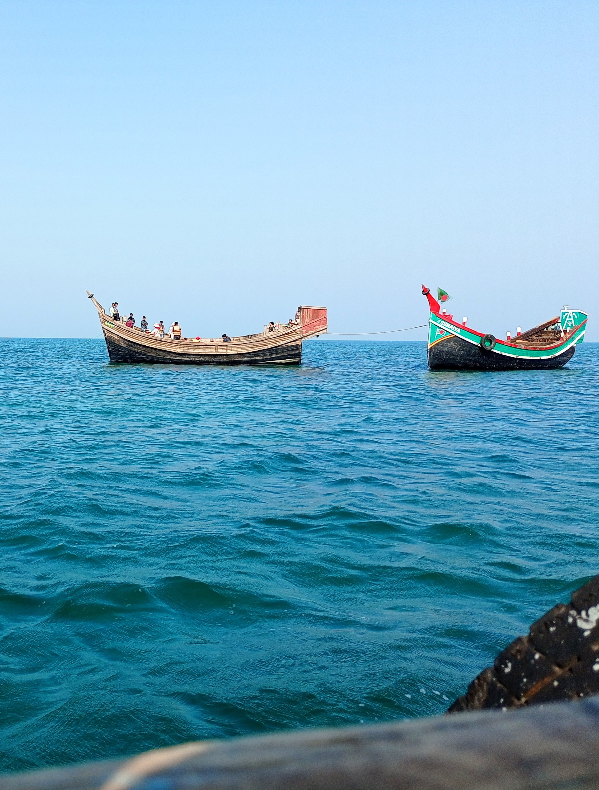
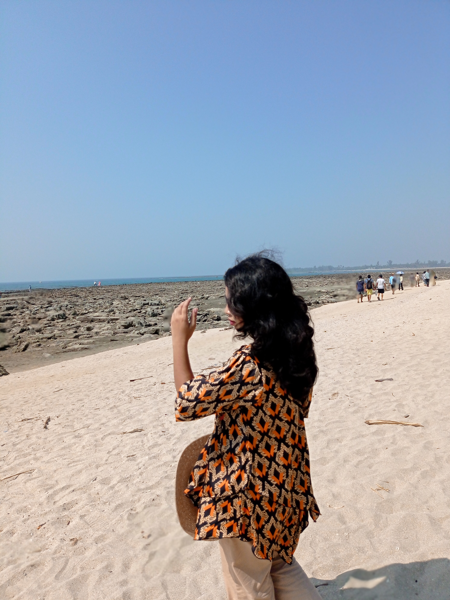
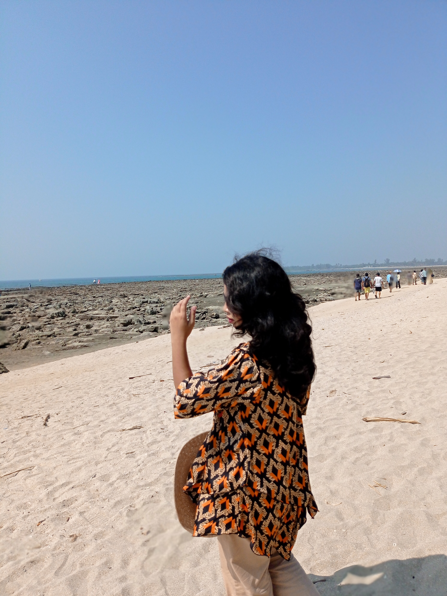
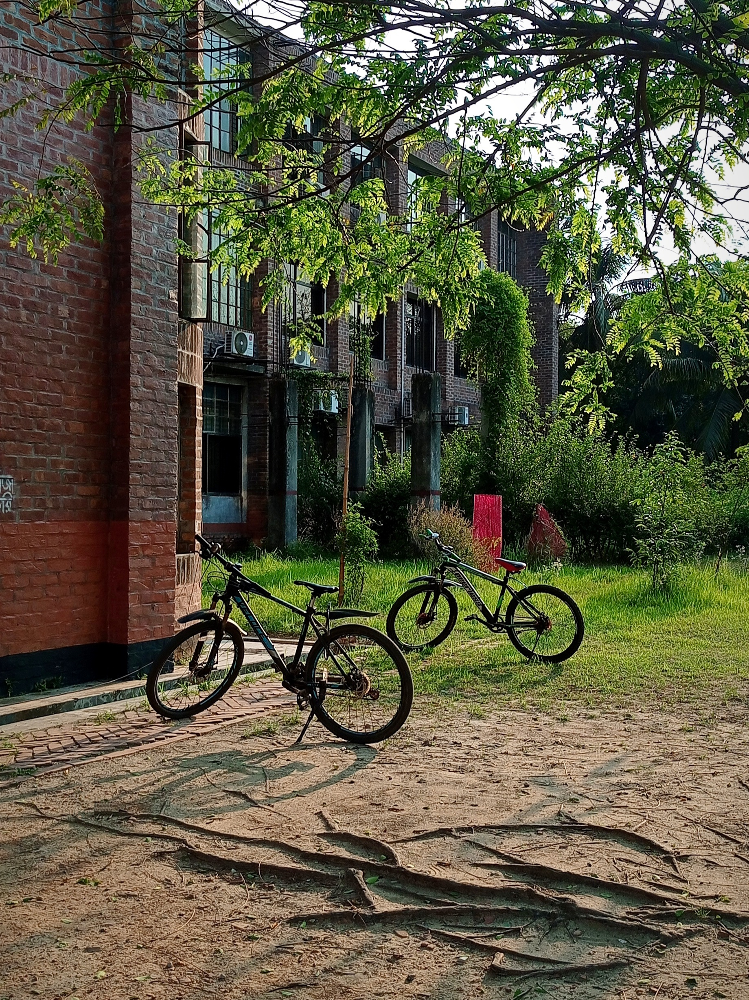
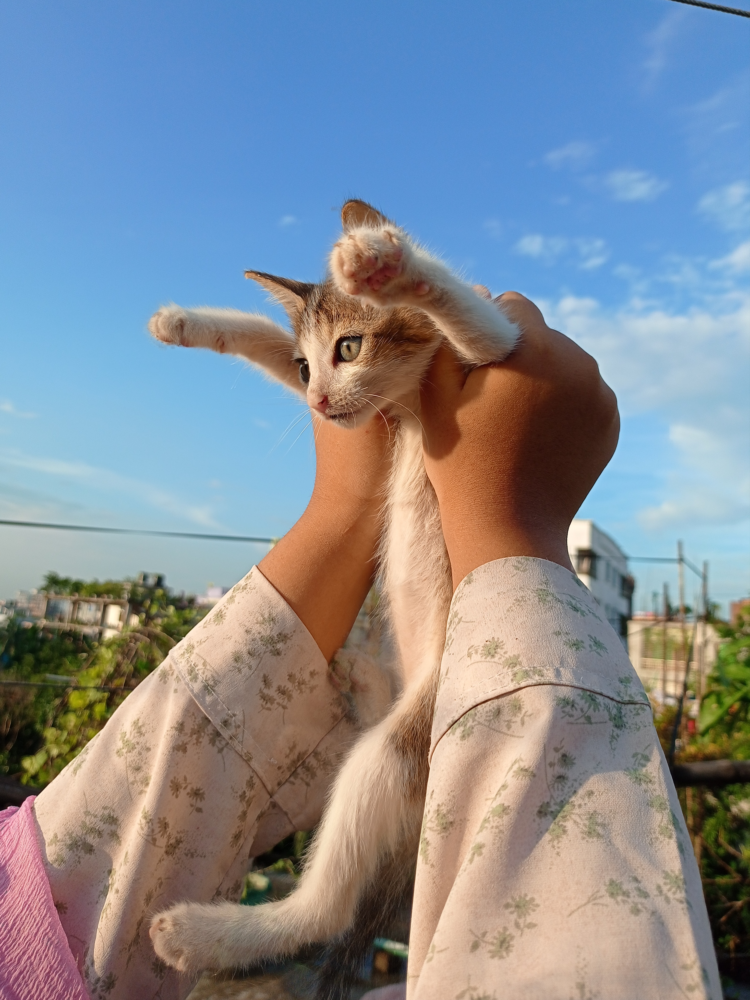

Travelling is something I truly enjoy. Although I haven’t explored many places yet, I’ve had the chance to visit Saint Martin, Rangamati, and Bandarban. Each of these places gave me a unique experience—Saint Martin with its peaceful beaches and blue sea, Rangamati with its beautiful lake and hills, and Bandarban with its green landscapes and fresh air. These trips made me realize how refreshing and eye-opening travelling can be.
 

I dream of visiting many more places in the future, both inside and outside of Bangladesh. There’s so much of the world I want to see—different cultures, food, traditions, and natural beauty. If I have the opportunity and enough money someday, I would love to travel more and make beautiful memories while learning new things from every place I visit.
Photography is another hobby that I really enjoy. I love taking pictures of random and beautiful things that catch my attention—like flowers, the sky, streets, buildings, and simple everyday moments. Even though I don’t have a professional camera, I use my phone to capture these moments. I believe you don’t need expensive tools to appreciate or record beauty—it's all about how you see the world.
Through photography, I get to express my thoughts and creativity. Sometimes, a single photo can tell a whole story or remind me of a peaceful moment. It helps me notice the small, beautiful details in everyday life that people often ignore. Whether it’s a sunset, a shadow, or just a quiet road, capturing it in a photo makes me feel happy and inspired.
 